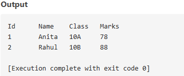

Types of Database Models
Hierarchical Model
Organizes data in a tree-like structure where each record has a single parent, except the root record. Uses parent-child relationships with one-to-many mapping between parent and child records.
Example: File systems, XML documents
Network Model
An extension of hierarchical model allowing multiple parents for a record. Uses graph structure with nodes representing records and edges representing relationships.
Example: CODASYL database systems
Relational Model
Stores data in tables (relations) with rows (tuples) and columns (attributes). Relationships between tables are established through foreign keys. Based on mathematical set theory and predicate logic.
Example: MySQL, Oracle, SQL Server
Entity-Relationship Model
A conceptual model that describes data as entities, attributes, and relationships. Used primarily for database design before implementation in a specific DBMS.
Components: Entities, Attributes, Relationships, Cardinality
Database Management System (DBMS) - Detailed Q&A
1. What is Database and DBMS? List out the advantages and disadvantages of DBMS.
A Database is a structured collection of data that can be easily accessed, managed, and updated. It helps in organizing data efficiently and allows users to perform operations like retrieval, insertion, and deletion.
A DBMS (Database Management System) is a software system that enables the creation, maintenance, and use of databases. It acts as an interface between the database and the end users or application programs.
Advantages of DBMS:
- Minimizes data redundancy by integrating all data in a single database.
- Ensures data consistency and integrity across applications.
- Improves data security with access controls and user authentication.
- Supports data backup and recovery mechanisms.
- Allows concurrent access and efficient data manipulation.
Disadvantages of DBMS:
- High initial and maintenance cost.
- Requires trained personnel to manage the system.
- Hardware and software complexity.
- Performance overhead in handling large data under high traffic.
2. Differentiate between file processing system and DBMS. Give at least four points.
- Data Redundancy: High in file systems; Low in DBMS due to centralized control.
- Data Access: File systems require custom programs; DBMS provides query languages like SQL.
- Data Integrity: Hard to enforce in file systems; DBMS ensures integrity through constraints.
- Security: File systems have limited security; DBMS offers robust security and permissions.
3. Explain the different models of DBMS with advantages and disadvantages.
- Hierarchical Model: Organizes data in a tree-like structure with parent-child relationships.
- Advantage: Fast data access for hierarchical data.
- Disadvantage: Difficult to manage complex relationships.
- Network Model: Data is organized using a graph, allowing multiple parent-child relationships.
- Advantage: Flexible relationship management.
- Disadvantage: Complex structure and navigation.
- Relational Model: Data is stored in tables with rows and columns.
- Advantage: Easy to use and widely supported.
- Disadvantage: Performance may be slower with very large data.
4. What is a relational database? How is it different from other database models?
A relational database is a type of database that stores data in tabular form. Each table (relation) contains rows (records) and columns (attributes). It uses structured query language (SQL) for data operations.
Differences:
- Based on mathematical relations unlike hierarchical/network models.
- More flexible and user-friendly due to SQL.
- Supports constraints, normalization, and better data integrity.
5. What is data redundancy? How does DBMS help in reducing it?
Data redundancy refers to unnecessary repetition of data in different locations. It leads to wasted storage and potential inconsistency.
DBMS minimizes redundancy by storing data centrally and using keys to relate tables. This avoids duplication and improves integrity and efficiency.
6. Write differentiate between centralized and distributed database systems.
- Centralized: All data stored in a single location.
- Distributed: Data stored across multiple sites connected via network.
- Failure Impact: Centralized is prone to total failure; distributed systems offer fault tolerance.
- Performance: Centralized has latency issues; distributed improves local access speed.
7. Who is Database Administrator (DBA)? What are the major responsibilities of DBA?
A Database Administrator (DBA) is a person responsible for managing and maintaining database systems.
Responsibilities include:
- Database design and implementation.
- Monitoring performance and optimizing queries.
- Ensuring data security and access control.
- Creating backup and recovery strategies.
- Managing users and roles.
8. Define normalization. Explain 1NF, 2NF and 3NF with suitable examples.
Normalization is a technique to design relational databases to reduce redundancy and improve data integrity.
1NF (First Normal Form): All attributes should have atomic values.
Example:
Invalid: {Name: "John", Phone: "123,456"}
Valid: {Name: "John", Phone: "123"} and another row with "456"
2NF (Second Normal Form): No partial dependency of non-key attributes on part of a composite key.
3NF (Third Normal Form): No transitive dependency. Non-key attributes should not depend on other non-key attributes.
9. Explain the terms: primary key, foreign key, and candidate key with examples.
- Primary Key: Uniquely identifies each record in a table.
Example: StudentID in Students table.
- Foreign Key: Refers to primary key of another table to establish relationship.
Example: CourseID in Enrollment table refers to Courses table.
- Candidate Key: All possible keys that can act as primary key. One of them is chosen as primary key.
10. What is SQL? Explain its components and common functions.
SQL (Structured Query Language) is a standard language to store, manipulate, and retrieve data from relational databases.
Components:
- DDL (Data Definition Language): CREATE, ALTER, DROP
- DML (Data Manipulation Language): SELECT, INSERT, UPDATE, DELETE
- DCL (Data Control Language): GRANT, REVOKE
- TCL (Transaction Control Language): COMMIT, ROLLBACK
11. Write SQL commands to perform the following operations:
a. Create a table named students with the fields: Id, Name, Class, and Marks.
CREATE TABLE students (
Id INT PRIMARY KEY,
Name VARCHAR(50),
Class VARCHAR(20),
Marks INT
);
b. Insert records into the students table with appropriate values.
INSERT INTO students (Id, Name, Class, Marks) VALUES
(1, 'Anita', '10A', 78),
(2, 'Rahul', '10B', 88),
(3, 'Neha', '10A', 92);
c. Display all records from the students table.
SELECT * FROM students;
d. Update the marks of a student whose name is 'Anita' to 85.
UPDATE students
SET Marks = 85
WHERE Name = 'Anita';
e. Delete the record of the student with id = 3.
DELETE FROM students
WHERE Id = 3;

12. Define the following terms.
- a. Data Dictionary: Stores metadata or information about database structure.
- b. Primary Key: Unique identifier for records in a table.
- c. Relationship: Logical association between tables.
- d. DML: Language to manipulate data in tables (e.g., INSERT, UPDATE).
- e. SQL: Language for interacting with relational databases.
- f. Data Integrity: Ensures data is accurate and consistent.
- g. DDL: Commands used to define or modify database structure (e.g., CREATE, DROP).
- h. Data Security: Protection of data from unauthorized access.
- i. Database System: Comprises DBMS software, the database, and the hardware/system environment.